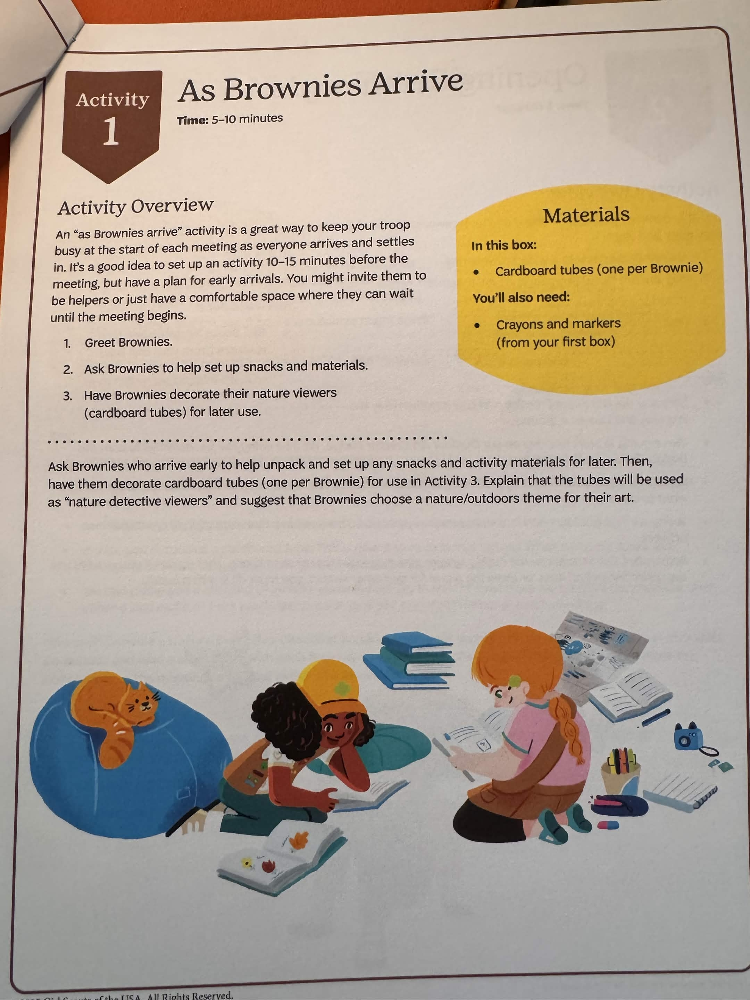
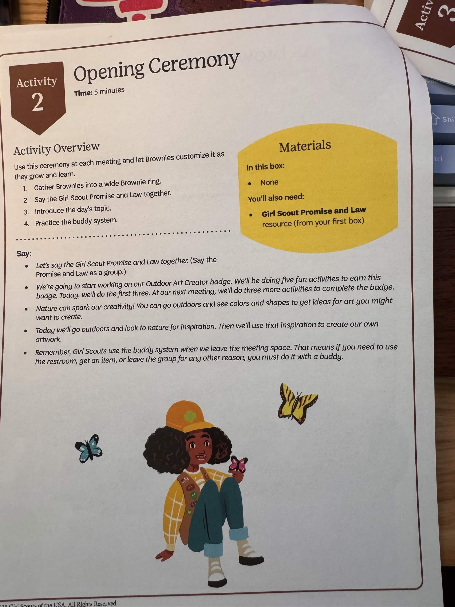
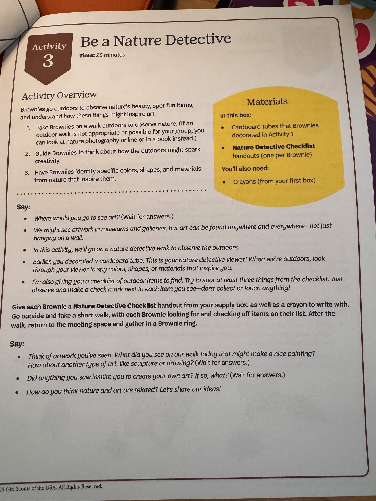
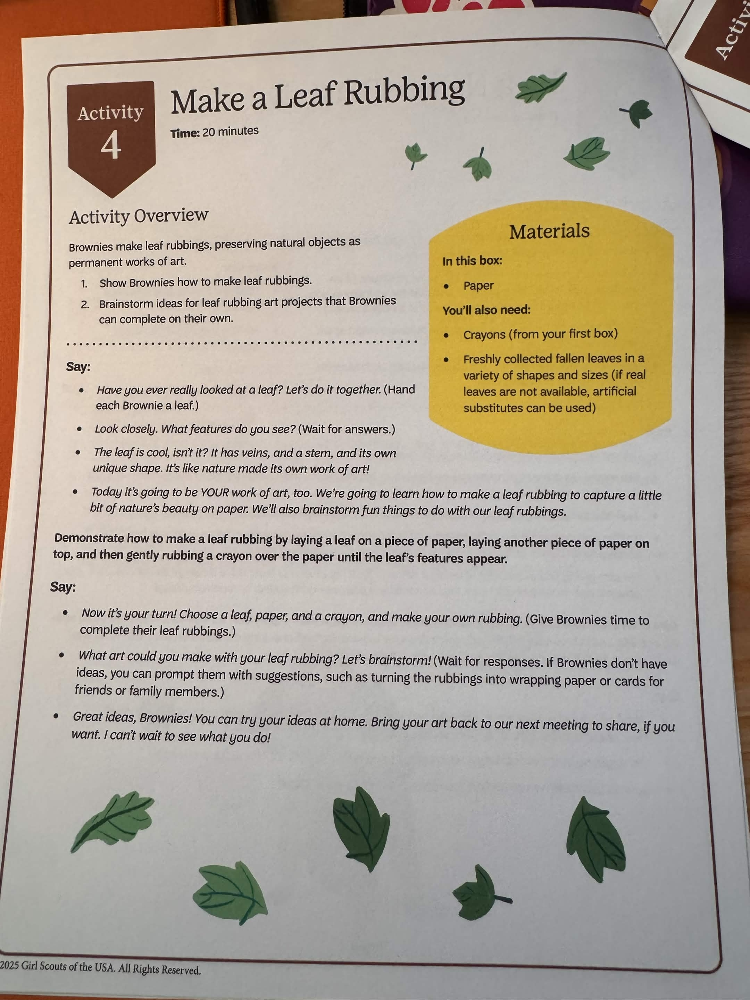
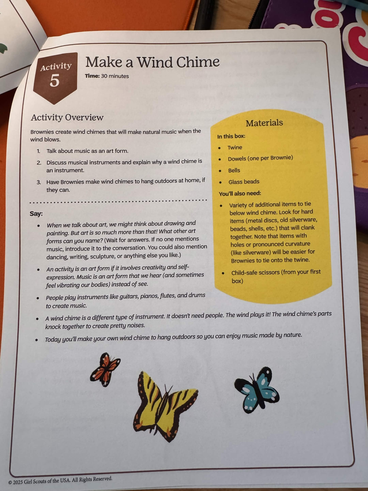
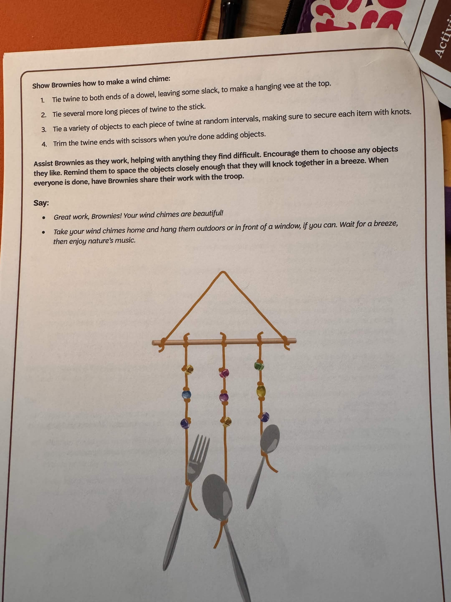
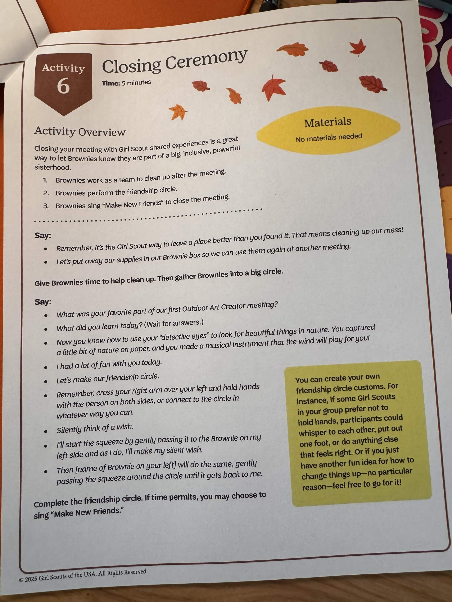
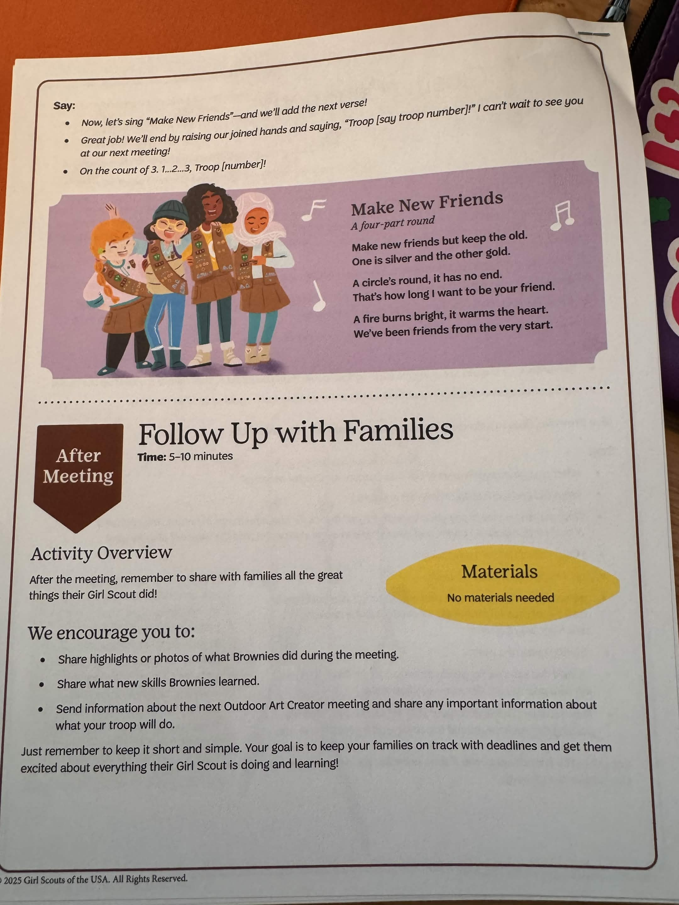

3:45🌳 Be a Nature Detective — outdoor walk (25 min)
4:10🍃 Make a Leaf Rubbing (20 min)
4:30🎶 Make a Wind Chime (30 min)
5:00Closing Ceremony + Friendship Circle (5 min)
If running long, the wind chime can be shortened — basic tying skills are the core; decorating can continue at home.
🛒 Shopping / Supplies to Grab
Most materials are in the Experience Box. These are extras you may need to provide:
A1 As Brownies Arrive 5-10 min
Materials: Cardboard tubes (one per Brownie, in box) · crayons + markers (from first box)
Greet Brownies as they arrive
Have early arrivers help set up snacks + materials
Brownies decorate cardboard tubes — these become "nature detective viewers" for Activity 3
Suggest a nature/outdoors theme for the decoration
📷 Reference page

A2 Opening Ceremony 5 min
Materials: Promise & Law resource (from first box)
Gather into a wide Brownie ring
Say the Girl Scout Promise + Law together
Introduce today: "We're starting our Outdoor Art Creator badge — five fun activities over two meetings, three today"
Practice the buddy system reminder (bathroom, leaving the group)
Say: "Nature can spark our creativity! Today we'll go outdoors and look to nature for inspiration. Then we'll use that inspiration to create our own artwork."
📷 Reference page

A3 Be a Nature Detective 25 min
Materials: Decorated cardboard tubes (from A1) · Nature Detective Checklists (in box, one per Brownie) · crayons
Tubes = "nature detective viewers" — look through to spot colors, shapes, materials
Pass out checklists + crayons
Take a short walk outdoors — Brownies look for and check off items on their list
Observe only — don't collect or touch anything!
Return to meeting space and gather in a Brownie ring
Say (after walk): "What did you see on our walk that might make a nice painting? Did anything inspire you to create your own art?"
📷 Reference page

A4 Make a Leaf Rubbing 20 min
Materials: Paper (in box) · crayons (first box) · fresh leaves (variety of shapes — bring or collect)
Hand each Brownie a leaf
Demo: place leaf on paper → cover with second piece of paper → rub crayon gently over top
Brownies make their own rubbings
Brainstorm: "What art could you make with your leaf rubbing?" (wrapping paper, cards, etc.)
Encourage them to try ideas at home + bring back next meeting
📷 Reference page

A5 Make a Wind Chime 30 min
Materials: Twine, dowels (one each, in box), bells, glass beads · child-safe scissors (first box) · extras to tie on (silverware, shells, beads, metal discs)
Steps:
Tie twine to both ends of the dowel (loose vee at top for hanging)
Tie several long pieces of twine to the dowel — these will hold the dangly items
Tie objects to each piece of twine at random intervals — secure each with knots
Trim twine ends with scissors when done
Help Brownies space items closely enough to clank in a breeze. Tying knots is the trickiest part — be ready to help.
Say: "A wind chime is a different type of instrument — the wind plays it! Take yours home and hang it outside or by a window."
📷 Reference pages (2)


A6 Closing Ceremony 5 min
Materials: None
Brownies clean up together (Girl Scout way: leave it better than you found it)
Gather into a circle for the Friendship Circle
Reflect: "What was your favorite part?" / "What did you learn?"
Cross right arm over left, hold hands, silent wish, pass squeeze
Optional: sing "Make New Friends" (lyrics on Girl Scouts page)
End: hands raised, "Troop 5641!" on the count of 3
📷 Reference pages (2)


📤 After the Meeting
Send a quick parent update:
Share photo highlights from the meeting
Mention what they learned (nature observation, leaf rubbings, wind chimes)
Tease the next meeting (steps 4 + 5 of the Outdoor Art badge)